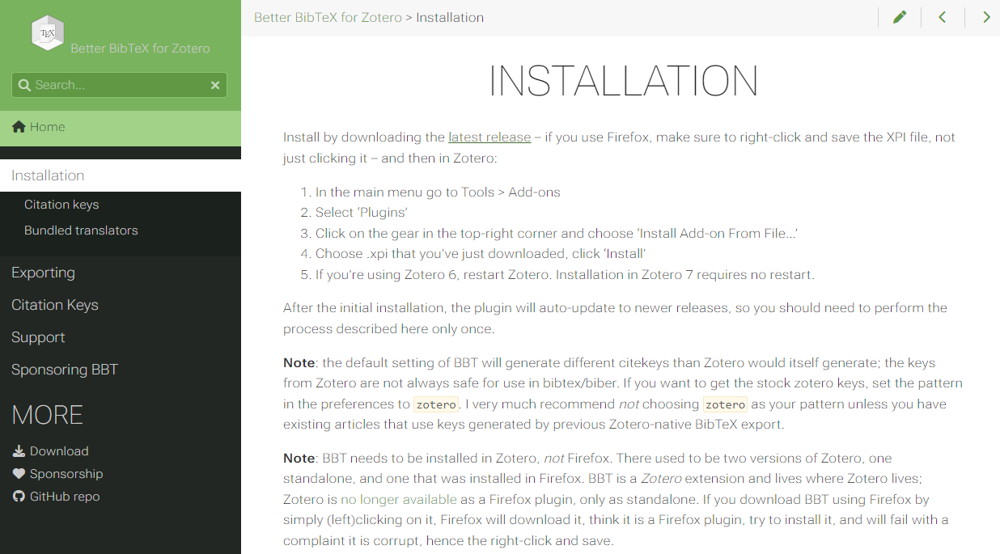
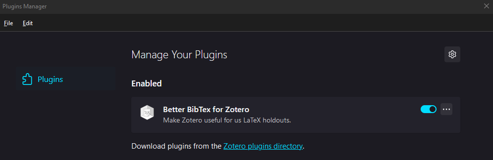
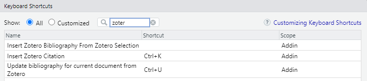

# To run this, you must first install the 'remotes' package
remotes::install_github(repo = "LuisLauM/rbbt")Image credits: RetroSupply at Unplash
[EN] Zotero + Quarto + RStudio and extras
Quarto is becoming more and more a powerful alternative for the generation of various types of documents and reports. Zotero is one of the most widespread and widely used bibliographic citation managers, not only because it is free software, but also because the community around it has been developing many plug-ins that allow to increase its capabilities beyond what is offered by its own developers. Finally, RStudio is one of the preferred IDE in the community of programmers in R, R markdown and Quarto, for its simplicity and power, but also for allowing the incorporation of addins (the analogy of plug-ins) through R packages.
In this article, we will see how through an R package it is possible to add the possibility in RStudio to insert bibliographic citations from Zotero in Quarto files (and also in R markdown) in a very simple way (learning one or two keyboard shortcuts).
Note
All the material needed to run this tutorial can be found in my repository, following this link link. You must click on the View raw link or the Download raw file button.
Required software
As you can suppose, it is necessary to have installed: R, RStudio, Zotero (preferably with a logged in account and with some references that we can use as an example) and Quarto (this last one comes with the installation of the latest versions of RStudio).
Installing RBB plug-in in Zotero
To quote the words of the official website of this plug-in: Better BibTeX (BBT) is a plugin for Zotero and Juris-M that makes it easier to manage bibliographic data, especially for people authoring documents using text-based toolchains (e.g. based on LaTeX / Markdown).
The installation is detailed in the web site itself, but we will make quick wrap-up:
Go to the Installation section (tab):
Right in the first sentence of the instructions, the words latest release are in a slightly different color as they contain the link to the repository of the latest available version of the plug-in:

Clicking on this link will open a repository window in Github, from where we must download the file with extension .xpi:
Next, we will open a Zotero window and go to the Tools → plug-ins menu:
A window will open showing all installed plug-ins. To install a new plug-in, just click on the gear icon (top right) and click on the Install Pluggins From File option:
From here, we will select the xpi file we downloaded in step [3] and, after a few seconds, we should see our new BBT plug-in installed and active (because yes, it is possible to deactivate plug-ins):

Installing the rbbt package and addin in RStudio
As I mentioned, in RStudio it is possible to add extra capabilities to the IDE through addins. For our case, we will use a package that contains the addins needed to interface our RStudio interface with Zotero. The package referred to is called rbbt and, while it is NOT an official CRAN package, we can download it directly from their repository on Github.
Now, you may decide to download and use the official version of the package; however, as of this writing, I have taken the official version of rbbt and created my own version where I have corrected certain problems and added certain features (e.g., the ability to quote R packages). This tutorial shows how to install and use the (forked) version available on my Github profile, but this is open source, so you decide (you can even create your own version and add more interesting features).
To install the package, just run the following line in R:
Once the installation is complete, we can check that it has been correctly added to our Addins menu, which is located right at the end of the RStudio shortcut bar:
By clicking on the Addins drop-down menu, we can look for the Insert Citation command to be found now:
From this point on, it is possible to perform those actions by clicking on those buttons, but this is VERY uncomfortable to do while writing an article or report, so we will now see how to add keyboard shortcuts for those commands.
Configuring rbbt shortcuts
Adding keyboard shortcuts in RStudio is very simple, just go to the menu Tools → Modify keyboard shortcuts and, in the window that will appear, use the small search engine at the top right to find those commands related to Zotero. Three will appear, of which, from my own experience, I have only assigned a shortcut to Insert citation. To assign a key combination, just click on the space to the right of the name of each command (in the Shortcut column) and press the desired combination: in my case, I use the combinations of Ctrl + K, but this will depend on your operating system (e.g. in MacOS there is no Ctrl key), to make sure that there are no other commands previously assigned to any of those key combinations.

Great, we’re all set! It’s time to test our changes.
Testing everything
We will start by opening a file in Quarto in HTML output format (this is merely illustrative, the commands will work regardless of the output format selected). Important: for this example, I suggest making sure that the Use visual markdown editor option is unchecked, since we will be working in Source mode.
Next, we will create an empty file where our bibliographic citations will be stored (for our example, we will name it references.bib). Then, in the header of our Quarto file (also called the YAML section), we will add a line where we will indicate the path to this created file:
---
title: "test_rbbt"
format: html
bibliography: references.bib
---- Also, to ensure that rbbt does NOT attempt to include references to figures, tables, equations, or other non-bibliographic elements, we will include the following code within a chunk at the beginning of our document:
# Get current filepath
currentFilePath <- this.path::this.path()
# Get citation keys
prefix2rm <- c("fig-", "tbl-", "eq-", "sec-", "lst-", "thm-")
keys <- rbbt::bbt_detect_citations(path = currentFilePath)
index2rm <- sapply(X = paste0("^", prefix2rm), FUN = grep, x = keys) |>
do.call(what = c)
# Updating bib file
rbbt::bbt_update_bib(path_rmd = currentFilePath, ignore = keys[index2rm], quiet = TRUE)Next, we will type some text and then press the key combination assigned to the insert quote command (remember the Ctrl + K shorcut?). What will happen is that a very thin window will open that will serve as an interface to Zotero. We will be able to type all the quotes we want to include in our text. The navigation between the suggested quotations is done with the arrow keys and the Enter key. It is also possible to add multiple quotes in each call of this small but powerful interface:
Note
Quotations may be made freely or in parentheses; however, for the latter case, quotations should be placed in square brackets [ ] (and not between the parenthesis symbols).
- Now yes, we render the document and we should get:
Render on Save
It is highly recommended to enable the Render on Save option (located at the top next to the Save button), which allows us to Render and visualize our work just pressing Ctrl + S (Save shortcut).
[ES] Zotero + Quarto + RStudio y algo más
Quarto se está volviendo cada vez más una poderosa alternativa para la generación de diversos tipos de documentos y reportes. Por su parte, Zotero es uno de los administradores de citas bibliográficas más extendido y utilizado, no solo por ser software libre, sino también porque la comunidad a su alrededor ha ido desarrollando muchos plug-ins que permiten incrementar sus capacidades fuera de lo ofrecido por sus propios desarrolladores. Finalmente, RStudio es uno de los IDE preferidos en la comunidad de programadores en R, R markdown y Quarto, por su simplicidad y potencia, pero también por permitir la incorporación de addins (la analogía de plug-ings) a través de paquetes de R.
En el presente artículo, veremos cómo a través de un paquete de R es posible añadir la posibilidad en RStudio de insertar citas bibliográficas desde Zotero en archivos Quarto (y también en R markdown) de manera muy sencilla (aprendiendo uno o dos atajos de teclado).
Note
Todo el material necesario para ejecutar este tutorial se puede encontrar en mi repositorio, siguiendo este link. Deberás dar click al link de View raw o bien al botón de Download raw file.
Software necesario
Como ya imaginarán, es necesario tener instalados: R, RStudio, Zotero (de preferencia, con una cuenta logueada y con algunas referencias que podamos usar como ejemplo) y Quarto (este último viene junto a la instalación de las últimas versiones de RStudio).
Instalando el plug-in de RBB en Zotero
Citando las propias palabras de la web oficial de este plug-in: Better BibTeX (BBT) es un complemento para Zotero y Juris-M que facilita la gestión de los datos bibliográficos, especialmente para los autores de documentos que utilizan cadenas de herramientas basadas en texto (por ejemplo, LaTeX / Markdown).
Su instalación está detallada en la propia web, pero haremos un resumen aquí:
Ir a la sección (pestaña) de Instalación:
Justamente en la primera frase de las instrucciones, las palabras latest release están de un color ligeramente distinto ya que contienen el link al repositorio de la última versión disponible del plug-in:
Al hacer click sobre ese link, se abrirá una ventana de repositorio en Github, desde donde deberemos descargar el archivo con extensión .xpi:
Seguidamente, abriremos una ventana de Zotero e iremos al menú de Tools → Plugins:
Se abrirá una ventana que nos mostrará todos los plug-ins instalados. Para instalar un plug-in nuevo, bastará con dar click al ícono de engranaje (arriba a la derecha) y dar click a la opción Install Pluggins From File:
Desde aquí, seleccionaremos el archivo xpi que descargamos en el paso [3] y, después de unos segundos, ya deberíamos observar nuestro nuevo plug-in BBT instalado y activo (porque sí, es posible desactivar plug-ins):
Instalando el addin de rbbt en RStudio
Como mencioné, en RStudio es posible añadir capacidades extra al IDE a través de addins. Para nuestro caso, utilizaremos un paquete que contiene los addins necesarios para interconectar nuestra interfaz de RStudio con Zotero. El paquete referido se llama rbbt y, si bien NO es un paquete oficial de CRAN, podemos descargarlo directamente desde su repositorio en Github.
Ahora bien, usted puede decidir descargar y utilizar la versión oficial del paquete; sin embargo, al día en que escribo este artículo, yo he tomado la versión oficial de rbbt y he creado la mía propia en donde corrijo ciertos problemas y añado ciertas funcionalidades (e.g., el poder citar paquetes de R). El presente tutorial muestra cómo instalar y usar la versión (forked) disponible en mi perfil de Github, pero esto es código libre, por lo que usted decide (hasta incluso puede crear su propia versión y añadir funcionalidades más interesantes).
Para instalar el paquete, bastará con ejecutar las siguiente línea en R:
# Para esto, debe instalar previamente el paquete 'remotes'
remotes::install_github(repo = "LuisLauM/rbbt")Una vez que haya culminado la instalación, podremos revisar que se haya añadido correctamente a nuestro menú de Addins, que se encuentra justo al final de la barra de accesos rápidos de RStudio:
Al hacer click en el menú desplegable de Addins, podremos buscar que se encuentre ahora los comandos de Insertar citas y Añadir bibliografía:
A partir de este punto, ya es posible realizar esas acciones a través de dar click a esos botones, pero esto resulta MUY incómodo de hacer durante la redacción de un artículo o reporte, por lo que a continuación veremos cómo añadir atajos de teclado para dichos comandos.
Atajos de teclado para los comandos de rbbt
Añadir atajos de teclado en RStudio es muy sencillo, basta con ir al menú Tools → Modify keyboard shortcuts y, en la ventana que aparecerá, utilizar el pequeño buscador arriba a la derecha para hallar aquellos comandos relacionados con Zotero. Aparecerán 3, de los cuales bastará con asignar un atajo a Insertar cita. Para asignar una combinación de teclas, daremos click al espacio a la derecha del nombre del comando de interés (en la columna Shortcut) y presionar la combinación deseada: en mi caso, utilizo las combinación Ctrl + K, pero eso dependerá desde su sistema operativo (e.g. en MacOS no existe la tecla Ctrl), hasta el hecho de asegurarnos que no haya otros comandos previamente asignados a alguna de esas combinaciones de teclas.
¡Genial, ya tenemos todo listo! Es momento de probar nuestros cambios.
Poner a prueba todo
Empezaremos por abrir un archivo en Quarto en formato de salida en HTML (esto es meramente ilustrativo, los comandos funcionará independientemente del formato de salida seleccionado). Importante: para este ejemplo, sugiero asegurarnos que la opción Use visual markdown editor esté deseleccionada, ya que trabajaremos en el modo Source.
Seguidamente, crearemos un archivo vacío en donde se guardarán nuestras citas bibliográficas (para nuestro ejemplo, le pondremos el nombre references.bib). Luego, en la cabecera de nuestro archivo de Quarto (llamada también la sección YAML), añadiremos una línea en donde indicaremos la ruta a este archivo creado:
---
title: "test_rbbt"
format: html
bibliography: references.bib
---- Así mismo, para asegurarnos de que rbbt NO intente incluir las referencias a figuras, tablas, ecuaciones, u otros elementos no bibliográficos, incluiremos el siguiente código dentro de un chunk al inicio de nuestro documento:
# Get current filepath
currentFilePath <- this.path::this.path()
# Get citation keys
prefix2rm <- c("fig-", "tbl-", "eq-", "sec-", "lst-", "thm-")
keys <- rbbt::bbt_detect_citations(path = currentFilePath)
index2rm <- sapply(X = paste0("^", prefix2rm), FUN = grep, x = keys) |>
do.call(what = c)
# Updating bib file
rbbt::bbt_update_bib(path_rmd = currentFilePath, ignore = keys[index2rm], quiet = TRUE)A continuación, digitaremos algo de texto y seguidamente presionaremos la combinación de teclas asignada al comando de insertar cita (en este ejemplo, Ctrl + K). Lo que ocurrirá es que se abrirá una ventana muy delgada que nos servirá como interface con Zotero. En ella, podremos escribir todas las citas que deseamos incluir en nuestro texto. La navegación entre las citas sugeridas la haremos con las teclas direccionales y la tecla Enter. Así mismo, es posible añadir múltiples citas en cada llamada de esta pequeña pero poderosa interfaz:
Note
Las citas pueden hacerse de forma libre o entre paréntesis; sin embargo, para el segundo caso, deberán colocarse las citas entre corchetes [ ] (y no entre los símbolos de paréntesis).
- Ahora sí, renderizamos el documento y deberíamos obtener:
Render on Save
Es muy recomendable habilitar la opción de Render on Save (situada arriba al costado del botón de Guardar) que, como su nombre lo indica, permite Redenrizar al Guardar, lo que permite que solo presiones Ctrl + S para visualizar nuestro trabajo en Quarto.